7. Noise and dB¶
In this chapter we will discuss noise, including how it is modeled and handled in a wireless communications system. Concepts include AWGN, complex noise, and SNR/SINR. We will also introduce decibels (dB) along the way, as it is widely within wireless comms and SDR.
Gaussian Noise¶
Most people are aware of the concept of noise: unwanted fluctuations that can obscure our desired signal(s). Noise looks something like:

Note how the average value is zero in the time domain graph. If the average value wasn’t zero, then we could subtract the average value, call it a bias, and we would be left with an average of zero. Also note that the individual points in the graph are not “uniformly random”, i.e., larger values are rarer, most of the points are closer to zero.
We call this type of noise “Gaussian noise”. It’s a good model for the type of noise that comes from many natural sources, such as thermal vibrations of atoms in the silicon of our receiver’s RF components. The central limit theorem tells us that the summation of many random processes will tend to have a Gaussian distribution, even if the individual processes have other distributions. In other words, when a lot of random things happen and accumulate, the result appears approximately Gaussian, even when the individual things are not Gaussian distributed.

The Gaussian distribution is also called the “Normal” distribution (recall a bell curve).
The Gaussian distribution has two parameters: mean and variance. We already discussed how the mean can be considered zero because you can always remove the mean, or bias, if it’s not zero. The variance changes how “strong” the noise is. A higher variance will result in larger numbers. It is for this reason that variance defines the noise power.
Variance equals standard deviation squared (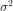).
Decibels (dB)¶
We are going to take a quick tangent to formally introduce dB. You may have heard of dB, and if you are already familiar with it feel free to skip this section.
Working in dB is extremely useful when we need to deal with small numbers and big numbers at the same time, or just a bunch of really big numbers. Consider how cumbersome it would be to work with numbers of the scale in Example 1 and Example 2.
Example 1: Signal 1 is received at 2 watts and the noise floor is at 0.0000002 watts.
Example 2: A garbage disposal is 100,000 times louder than a quiet rural area, and a chain saw is 10,000 times louder than a garbage disposal (in terms of power of sound waves).
Without dB, meaning working in normal “linear” terms, we need to use a lot of 0’s to represent the values in Examples 1 and 2. Frankly, if we were to plot something like Signal 1 over time, we wouldn’t even see the noise floor. If the scale of the y-axis went from 0 to 3 watts, for example, noise to be too small to show up in the plot. To represent these scales simultaneously, we work in a log-scale.
To further illustrate the problems of scale we encounter in signal processing, consider the below waterfalls of three of the same signals. The left-hand side is the original signal in linear scale, and the right-hand side shows the signals converted to a logarithmic scale (dB). Both representations use the exact same colormap, where blue is lowest value and yellow is highest. You can barely see the signal on the left in the linear scale.
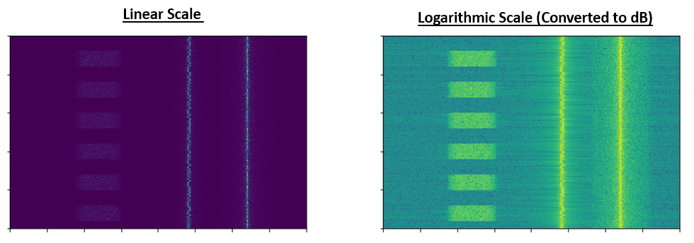{kind=link}
For a given value x, we can represent x in dB using the following formula:
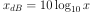
In Python:
x_db = 10.0 * np.log10(x)
You may have seen that 10 * be a 20 * in other domains. Whenever you are dealing with a power of some sort, you use 10, and you use 20 if you are dealing with a non-power value like voltage or current. In DSP we tend to deal with a power. In fact there is not a single time in this whole textbook we need to use 20 instead of 10.
We convert from dB back to linear (normal numbers) using:
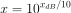
In Python:
x = 10.0 ** (x_db / 10.0)
Don’t get caught up in the formula, as there is a key concept to take away here. In DSP we deal with really big numbers and really small numbers together (e.g., the strength of a signal compared to the strength of the noise). The logarithmic scale of dB lets us have more dynamic range when we express numbers or plot them. It also provides some conveniences like being able to add when we would normally multiply (as we will see in the Link Budgets chapter).
Some common errors people will run into when new to dB are:
- Using natural log instead of log base 10 because most programming language’s log() function is actually the natural log.
- Forgetting to include the dB when expressing a number or labeling an axis. If we are in dB we need to identify it somewhere.
- When you’re in dB you add/subtract values instead of multiplying/dividing, e.g.:

It is also important to understand that dB is not technically a “unit”. A value in dB alone is unit-less, like if something is 2x larger, there are no units until I tell you the units. dB is a relative thing. In audio when they say dB, they really mean dBA which is units for sound level (the A is the units). In wireless we typically use watts to refer to an actual power level. Therefore, you may see dBW as a unit, which is relative to 1 W. You may also see dBmW (often written dBm for short) which is relative to 1 mW. For example, someone can say “our transmitter is set to 3 dBW” (so 2 watts). Sometimes we use dB by itself, meaning it is relative and there are no units. One can say, “our signal was received 20 dB above the noise floor”. Here’s a little tip: 0 dBm = -30 dBW.
Here are some common conversions that I recommend memorizing:
| Linear | dB |
|---|---|
| 1x | 0 dB |
| 2x | 3 dB |
| 10x | 10 dB |
| 0.5x | -3 dB |
| 0.1x | -10 dB |
| 100x | 20 dB |
| 1000x | 30 dB |
| 10000x | 40 dB |
Finally, to put these numbers into perspective, below are some example power levels, in dBm:
| 80 dBm | Tx power of rural FM radio station |
| 62 dBm | Max power of a ham radio transmitter |
| 60 dBm | Power of typical home microwave |
| 37 dBm | Max power of typical handheld CB or ham radio |
| 27 dBm | Typical cell phone transmit power |
| 15 dBm | Typical WiFi transmit power |
| 10 dBm | Bluetooth (version 4) max transmit power |
| -10 dBm | Max received power for WiFi |
| -70 dBm | Example received power for a ham signal |
| -100 dBm | Minimum received power for WiFi |
| -127 dBm | Typical received power from GPS satellites |
Noise in Frequency Domain¶
In the Frequency Domain chapter we tackled “Fourier pairs”, i.e., what a certain time domain signal looks like in the frequency domain. Well, what does Gaussian noise look like in the frequency domain? The following graphs show some simulated noise in the time domain (top) and a plot of the Power Spectral Density (PSD) of that noise (below). These plots were taken from GNU Radio.

We can see that it looks roughly the same across all frequencies and is fairly flat. It turns out that Gaussian noise in the time domain is also Gaussian noise in the frequency domain. So why don’t the two plots above look the same? It’s because the frequency domain plot is showing the magnitude of the FFT, so there will only be positive numbers. Importantly, it’s using a log scale, or showing the magnitude in dB. Otherwise these graphs would look the same. We can prove this to ourselves by generating some noise (in the time domain) in Python and then taking the FFT.
import numpy as np
import matplotlib.pyplot as plt
N = 1024 # number of samples to simulate, choose any number you want
x = np.random.randn(N)
plt.plot(x, '.-')
plt.show()
X = np.fft.fftshift(np.fft.fft(x))
X = X[N//2:] # only look at positive frequencies. remember // is just an integer divide
plt.plot(np.real(X), '.-')
plt.show()
Take note that the randn() function by default uses mean = 0 and variance = 1. Both of the plots will look something like this:
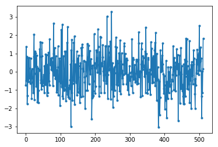{kind=link}
You can then produce the flat PSD that we had in GNU Radio by taking the log and averaging a bunch together. The signal we generated and took the FFT of was a real signal (versus complex), and the FFT of any real signal will have matching negative and positive portions, so that’s why we only saved the positive portion of the FFT output (the 2nd half). But why did we only generate “real” noise, and how do complex signals work into this?
Complex Noise¶
“Complex Gaussian” noise is what we will experience when we have a signal at baseband; the noise power is split between the real and imaginary portions equally. And most importantly, the real and imaginary parts are independent of each other; knowing the values of one doesn’t give you the values of the other.
We can generate complex Gaussian noise in Python using:
n = np.random.randn() + 1j * np.random.randn()
But wait! The equation above doesn’t generate the same “amount” of noise as np.random.randn(), in terms of power (known as noise power). We can find the average power of a zero-mean signal (or noise) using:
power = np.var(x)
where np.var() is the function for variance. Here the power of our signal n is 2. In order to generate complex noise with “unit power”, i.e., a power of 1 (which makes things convenient), we have to use:
n = (np.random.randn(N) + 1j*np.random.randn(N))/np.sqrt(2) # AWGN with unity power
To plot complex noise in the time domain, like any complex signal we need two lines:
n = (np.random.randn(N) + 1j*np.random.randn(N))/np.sqrt(2)
plt.plot(np.real(n),'.-')
plt.plot(np.imag(n),'.-')
plt.legend(['real','imag'])
plt.show()
{kind=link}
You can see that the real and imaginary portions are completely independent.
What does complex Gaussian noise look like on an IQ plot? Remember the IQ plot shows the real portion (horizontal axis) and the imaginary portion (vertical axis), both of which are independent random Gaussians.
plt.plot(np.real(n),np.imag(n),'.')
plt.grid(True, which='both')
plt.axis([-2, 2, -2, 2])
plt.show()

It looks how we would expect; a random blob centered around 0 + 0j, or the origin. Just for fun, let’s try adding noise to a QPSK signal to see what the IQ plot looks like:
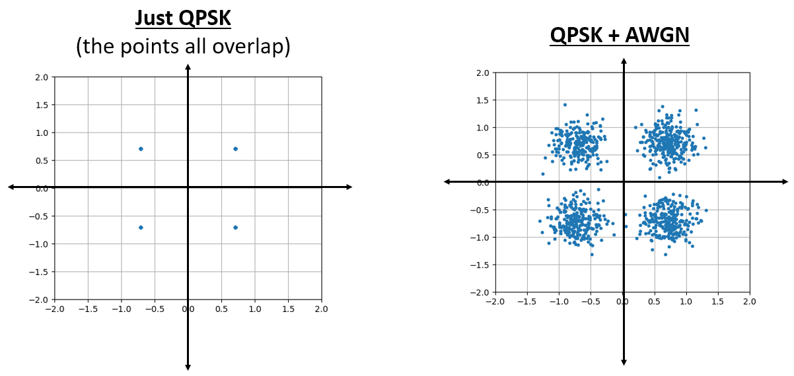{kind=link}
Now what happens when the noise is stronger?
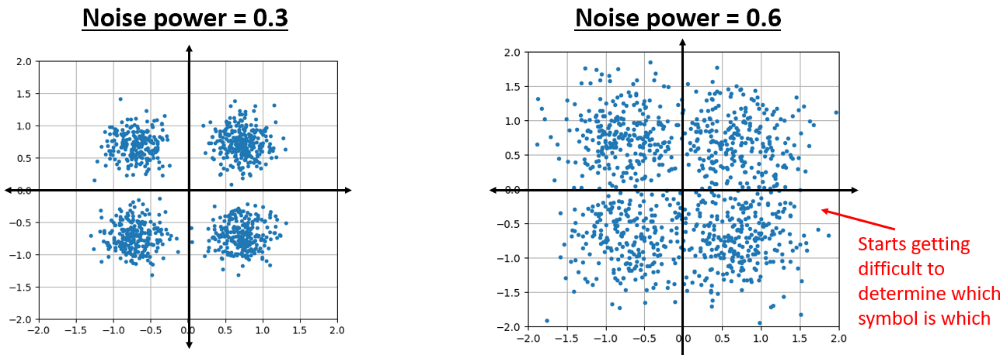{kind=link}
We are starting to get a feel for why transmitting data wirelessly isn’t that simple. We want to send as many bits per symbol as we can, but if the noise is too high then we will get erroneous bits on the receiving end.
AWGN¶
Additive White Gaussian Noise (AWGN) is an abbreviation you will hear a lot in the DSP and SDR world. The GN, Gaussian Noise, we already discussed. Additive just means the noise is being added to our received signal. White, in the frequency domain, means the spectrum is flat across our entire observation band. It will almost always be white in practice,or approximately white. In this textbook we will use AWGN as the only form of noise when dealing with communications links and link budgets and such. Non-AWGN noise tends to be a niche topic.
SNR and SINR¶
Signal-to-Noise Ratio (SNR) is how we will measure the differences in strength between the signal and noise. It’s a ratio so it’s unit-less. SNR is almost always in dB, in practice. Often in simulation we code in a way that our signals are one unit power (power = 1). That way, we can create a SNR of 10 dB by producing noise that is -10 dB in power by adjusting the variance when we generate the noise.
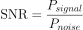
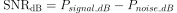
If someone says “SNR = 0 dB” it means the signal and noise power are the same. A positive SNR means our signal is higher power than the noise, while a negative SNR means the noise is higher power. Detecting signals at negative SNR is usually pretty tough.
Like we mentioned before, the power in a signal is equal to the variance of the signal. So we can represent SNR as the ratio of the signal variance to noise variance:
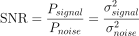
Signal-to-Interference-plus-Noise Ratio (SINR) is essentially the same as SNR except you include interference along with the noise, in the denominator.
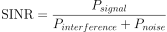
What constitutes interference is based on the application/situation, but typically it is another signal that is interfering with the signal of interest (SOI), and is either overlapping with the SOI in frequency, and/or cannot be filtered out for some reason.
External Resources¶
Further resources about AWGN, SNR, and variance: